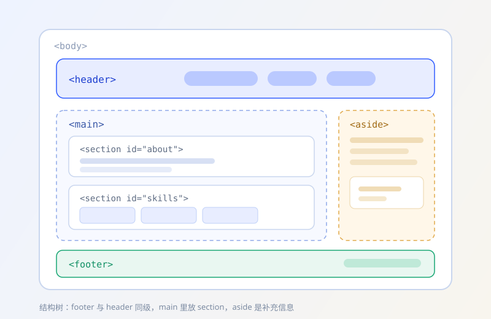
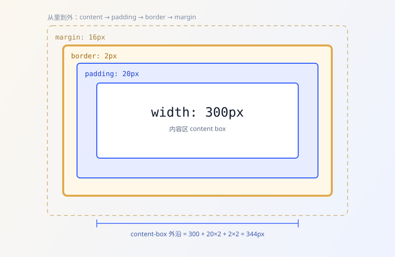
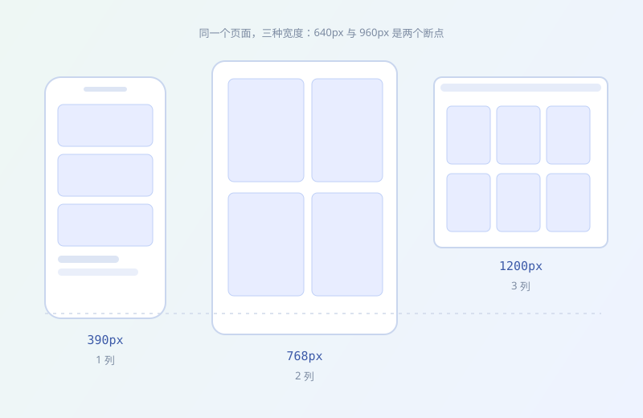

实验一 · 点击按钮，修改 DOM
按钮监听 click 事件，回调里修改 textContent、title 属性，并用 classList 切换高亮类。
02 / 学习笔记
这学期我最大的收获，是把 HTML、CSS、JavaScript 的分工理清楚了： 结构归标签，外观归样式，行为归脚本。下面三块笔记，加上两个能动手点的实验。
笔记 01
写结构时我会先问自己：这是页头、正文还是页脚？这一段是独立的文章，
还是主内容的补充？想清楚语义，标签自然就选出来了，
不用满屏 div 也能把页面搭稳。
alt，表单用 label 关联输入框。
笔记 02
一个元素占多宽，不是看 width 一个数字就够的。
默认的 content-box 下，width 只算内容区，
内边距和边框要另外加；换成 border-box，
它们就被算进宽度里，布局一下子好算很多。
我现在的习惯是全局先写 * { box-sizing: border-box; }，
需要演示“原始算法”的地方再单独改回来——比如下面实验二的盒子。
计算题：内容 300 + 左右内边距 20×2 + 左右边框 2×2 = 344px；换成 border-box 后，外沿还是 300px，内容缩到 256px。

笔记 03
布局用 Grid 与 Flexbox，断点用媒体查询。我的写法是“移动优先”： 默认单列，屏幕变宽再加列，而不是先写三列再往回删。
640px 起两列，960px 起三列。grid-template-columns: repeat(3, minmax(0, 1fr))，避免长单词把列撑破。<meta name="viewport">。max-width: 100%; height: auto;。窄屏时我还要检查一件事：有没有出现横向滚动条。 这个站点在 390px 与 1440px 下都验证过，没有横向溢出。

动手实验
下面两个实验都是真的在跑：按钮监听事件，回调里改文字、改属性、切类名。 刷新页面后会回到初始状态。
按钮监听 click 事件，回调里修改 textContent、title 属性，并用 classList 切换高亮类。
内容宽 300px、左右内边距各 20px、左右边框各 2px。 切换 box-sizing，看外沿宽度的实际变化。
计划
进度条是自评，不是分数；写下来是为了知道下一步补哪里。
把这个站点收尾：补页面、修窄屏、部署到 GitHub Pages。
用 JavaScript 做一个小工具（待办清单或课程表），练习数据与渲染。
补数据结构基础，同时把阅读书单里的三本读完。